Bauanleitung: Centronics-Interface
Sie haben Probleme, Ihren Drucker mit Centronics-Schnittstelle an den seriellen Port des C 64 anzuschließen? Dann bauen Sie sich doch ein Interface, das das gleiche leistet wie die käuflichen Geräte.
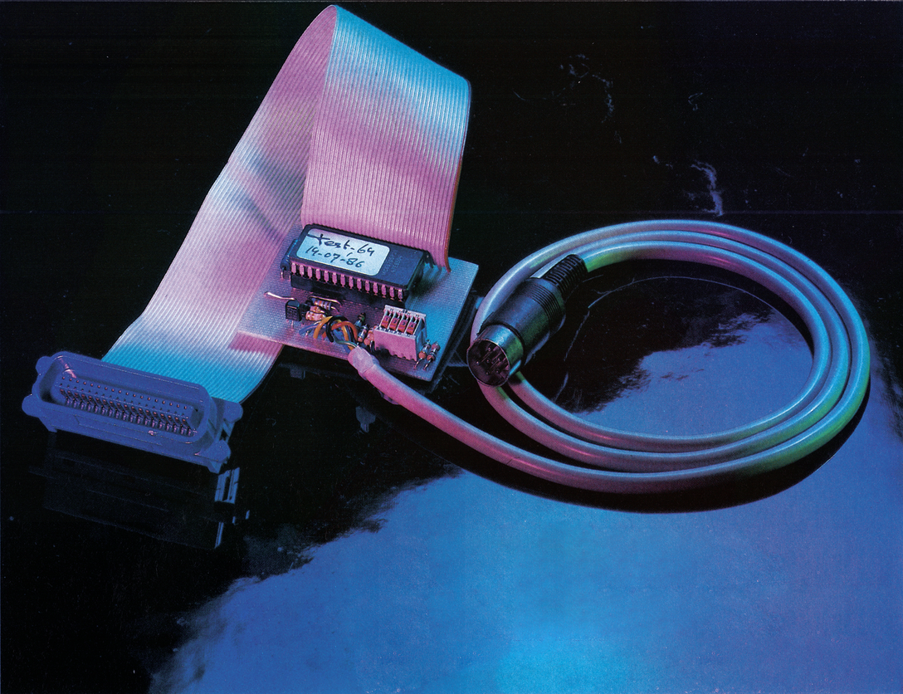
Selbstbau ist preiswerter als der Kauf eines fertigen Produktes. Darum stellen wir Ihnen in dieser Ausgabe als Hardware des Monats die Bauanleitung eines Centronics-Interfaces vor, das von der Leistung her käuflichen Interfaces nicht nachsteht. Wenn Sie sich zum Nachbau entschließen, haben Sie anschließend nicht nur ein gut funktionierendes Interface, Sie lernen auch einen neuen, sogenannten Ein-Chip-Mikrocomputer kennen, der zur Zeit für die unterschiedlichsten Steuerungsaufgaben eingesetzt wird. Da dieser Ein-Chip-Mikrocomputer alle zu einem Computer gehörenden Baueinheiten, wie Mikroprozessor, RAM, ROM, EPROM und Ein-/Ausgabe-Ports enthält, und in der letzten Zeit zu erschwinglichen Preisen vertrieben wird, wurde das Interface mit ihm ausgestattet. Er eignet sich aber nicht nur für den Einsatz in Interfaces, vielmehr lassen sich mit ihm relativ preisgünstig »intelligente« Peripheriegeräte wie EPROM-Brenner, MIDI-Interfaces und so weiter an den seriellen Port des C 64 oder C 128 problemlos anschließen. Der Befehlssatz des Ein-Chip-Mikrocomputers ist identisch mit dem des 6800. All jene, die sich näher mit ihm beschäftigen wollen, finden einen entsprechenden Assembler auf der Programmservice-Diskette zu dieser Ausgabe. Zum Programmieren des internen EPROMs ist ein spezielles Programmiergerät erforderlich, dessen Schaltbild und Layout Sie in dieser Ausgabe auf Seite 58 finden.
Was leistet das Interface?
Anschließen läßt sich das Interface an jeden handelsüblichen, grafikfähigen Matrixdrucker mit genormter Centronics-Schnittstelle. Mit Hilfe verschiedener Sekundäradressen können Betriebsarten oder -Modi aktiviert werden, mit denen sich die beiden C 64-Zeichensätze (Groß-/Grafikzeichen und Groß-/Kleinschrift) inklusive aller C 64-Steuer- und Grafikzeichen zu Papier bringen lassen. Auch ermöglicht das Interface den Anschluß eines Typenraddruckers. Um HiRes-Grafiken einzusetzen, existiert eine Betriebsart, bei der alle vom C 64 gesendeten Daten unmittelbar zum Drucker weitergeleitet werden. Die Möglichkeit, eine der Betriebsarten für alle Sekundäradressen zu fixieren, erhöht die Kompatibilität zu vorhandener Software. Wollen Sie zum Beispiel mit einem Programm arbeiten, das die Sekundäradresse 4 zum Interface sendet, um den Modus Groß-/Kleinschrift zu aktivieren, ist es nicht erforderlich, das Programm an das Interface anzupassen. Vielmehr reicht in einem solchen Fall die Befehlssequenz: OPEN 4,4:OPEN 5,4,3:CLOSE 4: CLOSE 5
Von nun an ist es egal, welche Sekundäradresse das Programm sendet. Der Drucker gibt so lange Groß-/ Grafikzeichen aus, bis er aus und wieder eingeschaltet wird.
Mit vier DIP-Schaltern läßt sich sowohl die Geräteadresse wie aber auch Auto-Linefeed ein/aus und der Druckertyp festlegen. Das Interface unterstützt nämlich Drucker, bei denen Grafik mit der Sequenz »ESC "*" ...« oder »ESC "K" ..« eingeschaltet wird.
In den beiden Commodore-Modi, die sich mit den Sekundäradressen 0 und 7 ansprechen lassen, kann das Interface teilweise den Commodore-Drucker MPS 801/803 simulieren.
Mit dieser und den zuvor beschriebenen Eigenschaften ist das Selbstbau-Interface den meisten käuflichen Geräten gleichzustellen. Allerdings ist es erheblich preiswerter als die käuflichen Typen, was nicht zuletzt auch durch den Einsatz neuester Technik erreicht wurde.
(A.Bos / ah)Anleitung auf Seite 58
Centronics-Interface für den Selbstbau
Matrixdrucker mit einer Centronics-Schnittstelle lassen sich jetzt für wenig Geld an den seriellen Port des C 64 anschließen. Do it yourself heißt die Devise! Wir geben eine Bauanleitung für ein Centronics-Interface, das es mit käuflichen Interfaces in jeder Beziehung aufnehmen kann.
Wenn Sie Ihren Matrixdrucker mit Centronics-Schnittstelle an den C 64 anschließen wollen, brauchen Sie ein Interface. Die preiswerteste Lösung ist der Selbstbau. Bei der hier vorgestellten Bauanleitung sparen Sie nicht nur Geld, sondern werden einen neuen Computertyp kennenlernen, der in Zukunft an Bedeutung gewinnen wird.
Centronics-Interfaces sind in der Regel sehr aufwendig und entsprechend kostspielig (zwischen 200 und 400 Mark). Denn ähnlich wie die 1541-Disketten-Station kommen sie ohne »intelligente« Baueinheiten nicht aus, da sie mehr leisten müssen als eine seriell-parallel-Wandlung. So muß das Interface zum Beispiel erkennen, ob es vom Computer über eine Geräteadresse angesprochen wurde. Dann muß der Commodore-Zeichensatz in den Standard-ASCII-Zeichensatz, mit dem die meisten Drucker arbeiten, gewandelt werden. Die C 64-Grafik- und Steuerzeichen, die außer den Commodore- und kompatiblen Druckern kein anderer Drucker ausgeben kann, müssen im Grafik-Modus übertragen werden. Außerdem müssen über Sekundäradressen bestimmte Betriebsarten wählbar sein, die bestimmen, ob nun Großschrift und Grafikzeichen oder Groß-/Kleinschrift ausgegeben oder das, was der Computer sendet, ohne Wandlung direkt zum Drucker weitergeleitet werden soll. Um all diese Aufgaben, von denen nur die wichtigsten genannt wurden, zu erledigen, ist ein kompletter Computer erforderlich, und genau aus diesem bestehen die Druckerinterfaces. Es muß also alles, was zu einem Computer gehört, vorhanden sein, angefangen beim Mikroprozessor über RAM und ROM bis hin zu den I/O-Bausteinen. Werden Interfaces diskret, also mit den genannten Bausteinen aufgebaut, sind sie teuer und vom Aufbau her sehr aufwendig. Es geht aber auch anders. Seit einigen Jahren werden sogenannte Ein-Chip-Mikrocomputer hergestellt, in denen alle erforderlichen, zum Computer gehörende, Bausteine untergebracht sind. Weil Bausteine dieser Art in der letzten Zeit zu erschwinglichen Preisen (etwa 30 Mark) vertrieben werden, haben wir uns dazu entschlossen unser Interface mit einem solchen Ein-Chip-Computer, dem MC68705 von Motorola, zu bestücken. Er enthält neben 112 Byte RAM und 1804 Byte EPROM 20 TTL/CMOS-kompatible, bidirektionale I/O-Leitungen. Weitere externe Bausteine reduzieren sich daher auf ein Minimum. Einige Nachteile hat der Einsatz eines solchen Ein-Chip-Computers jedoch für den C 64-Anwender:
Was ist zu beachten?
- Die Maschinensprache, mit der sich der MC68705 programmieren läßt, hat nichts mit der Maschinensprache des 6510 zu tun. Man muß also, möchte man den MC68705 für eigene Zwecke einsetzen, eine neue Sprache erlernen. Außerdem ist ein sogenannter Cross-Assembler erforderlich, mit dem sich Programme für den MC68705 auf dem C 64 entwickeln lassen. Ein solcher Cross-Assembler erzeugt also MC68705-Maschinen-Code. Diejenigen, die sich näher mit dem MC68705 beschäftigen wollen, finden einen entsprechenden Cross-Assembler auf der Programmservice-Diskette zu dieser Ausgabe.
- Der MC68705-Maschinencode muß nun mit Hilfe eines EPROM-Brenners in ein 2716-EPROM übertragen werden.
- Zur Programmierung des Mikrocomputer-Chips ist eine spezielle Schaltung (Bild 1) erforderlich. Das im 2716-EPROM gespeicherte MC68705-Maschinenprogramm wird damit in das EPROM des MC68705 übertragen. Wie das funktioniert, können Sie im entsprechenden Absatz nachlesen.
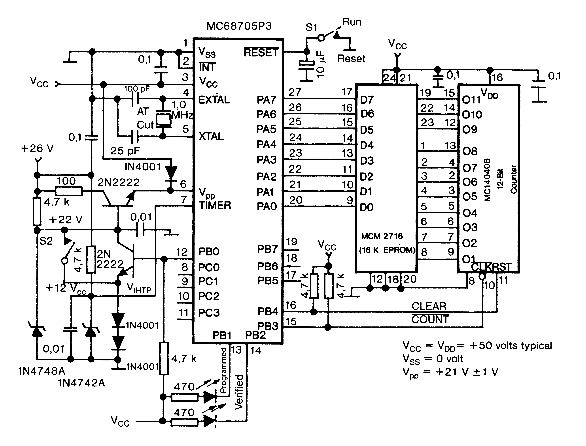
Möchten Sie jedoch nur das im folgenden beschriebene Interface nachbauen und sonst nichts mit dem MC68705 zu tun haben, können Sie den programmierten Ein-Chip-Mikrocomputer beim Autor gegen entsprechendes Entgeld anfordern. Die Adresse finden Sie am Schluß des Artikels.
Wie programmiert man den MC68705
Tippen Sie zunächst das Programm für das Interface (Listing 1) mit dem MSE ab und speichern es anschließend auf Diskette oder Kassette.
Mit einem EPROM-Brenner Ihrer Wahl muß das soeben gespeicherte Programm in ein 2716-EPROM übertragen werden. Wie das funktioniert, und was dabei zu beachten ist, entnehmen Sie bitte der Anleitung zu Ihrem EPROM-Brenner.
So, jetzt wird's interessant, denn nun geht es an die Hardware, und zwar an das Programmiergerät zum MC68705. Wie eingangs schon erwähnt, ist dazu eine spezielle Schaltung erforderlich, die Sie in Bild 1 finden.
Das entsprechende Layout im Verhältnis 1:1 zeigt Bild 2 (Vorsicht spiegelverkehrt). Wollen Sie keine Platine für das Programmiergerät ätzen, können Sie die Schaltung auch auf einer Lochrasterplatine aufbauen. Welche Bauteile dazu benötigt und wie sie positioniert werden, zeigt Bild 3. Um das im EPROM gespeicherte Programm in den MC68705 zu übertragen, sind folgende Schritte erforderlich:
- Bevor der MC68705 und das mit dem Listing 1 gebrannte EPROM in die dafür vorgesehene Fassung gesteckt wird, überzeugen Sie sich davon, daß die im Schaltbild mit S1 und S2 gekennzeichneten Schalter geschlossen sind und weder VCC = 5V noch die erforderlichen 26V anliegen.
- Befinden sich die Bausteine in den entsprechenden Fassungen, und sind die beiden erforderlichen Spannungen angelegt, muß zuerst der Schalter S2 und anschließend der Schalter S1 geöffnet werden. Nun wird automatisch ein im MC68705 resistent enthaltenes Boot-Programm gestartet, das die Daten aus dem 2716-EPROM ausliest und im EPROM des Ein-Chip-Computers speichert.
- Bevor Sie nun den MC68705 aus der Fassung ziehen, überzeugen Sie sich davon, daß die beiden Schalter S1 und S2 geschlossen und die angelegten Spannungen abgeklemmt sind.
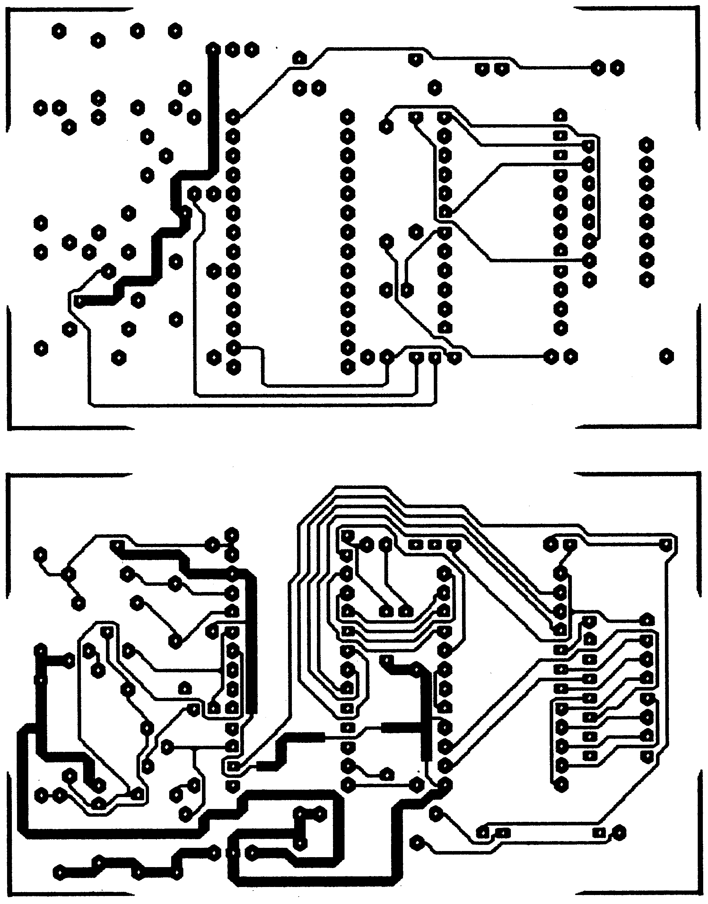
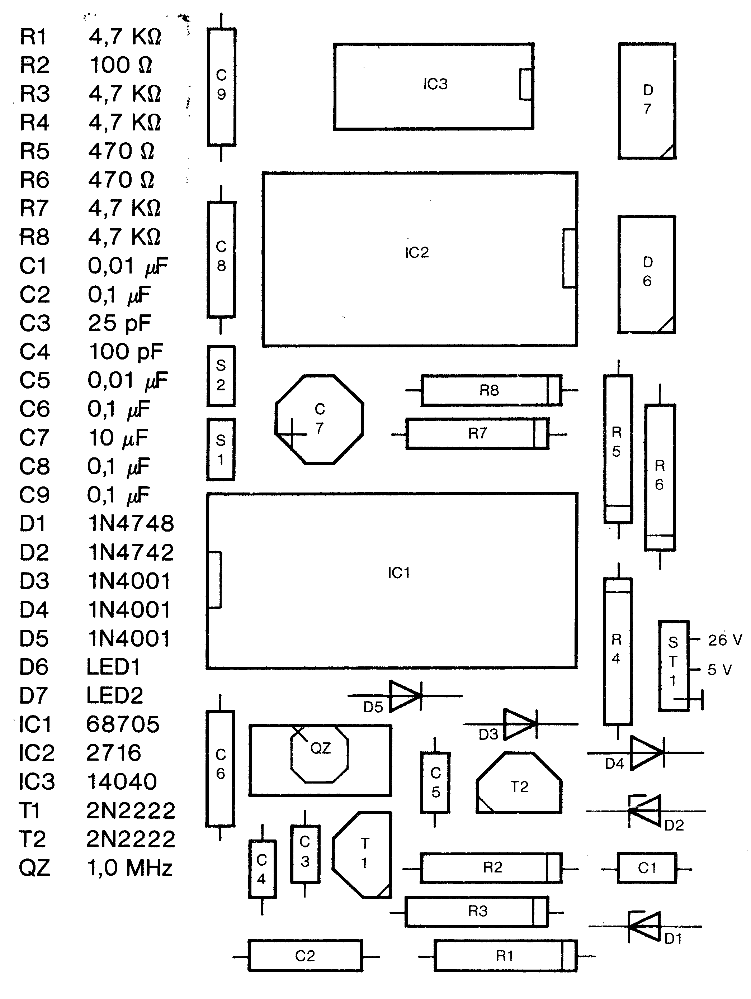
Aufbau des Interfaces
Bild 4 zeigt das Schaltbild, Bild 5 das dazugehörige Layout im Verhältnis 1:1 und Bild 6 den entsprechenden Bestückungsplan mit allen erforderlichen Bauteilen. Um das Interface mit dem Drucker zu verbinden, nehmen Sie am besten ein 36poliges Flachbandkabel. Das eine Ende ist mit dem Centronics-Stecker und das andere mit dem Interface zu verbinden. Achten Sie beim Löten unbedingt darauf, daß Leitungen nicht vertauscht werden. Das gleiche gilt auch für die Verbindung zwischen Computer und Interface. Die Pinbelegungen für den Centronics- und für den seriellen Stecker zeigt Bild 7. Ist das Interface zusammengebaut, muß noch der Pin 18 der Centronics-Buchse im Drucker auf 5 V gelegt werden, um das Interface mit der erforderlichen Spannung zu versorgen.
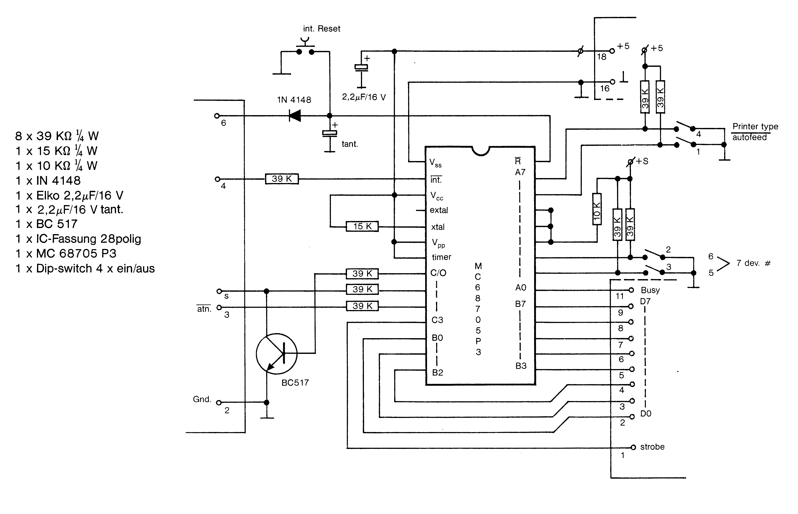
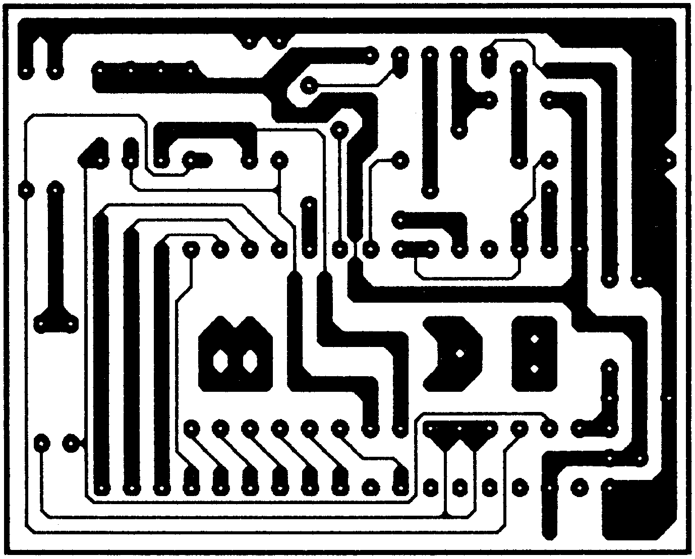
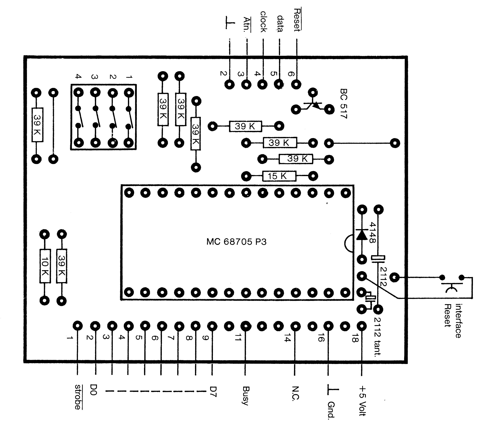
| Pin | Signal |
|---|---|
| 1 | SERIAL SRQIN |
| 2 | GND |
| 3 | SERIAL ATN/IN/OUT |
| 4 | SERIAL CLK IN/OUT |
| 5 | SERIAL DATA IN/OUT |
| 6 | RESET |
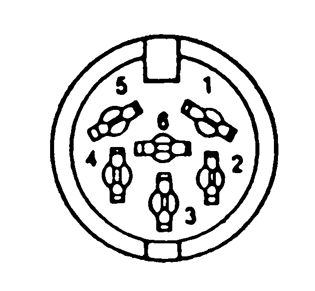
| Pin | Signal |
|---|---|
| 1 | Strobe |
| 2-9 | D0 - D7 |
| 11 | / |
| 16 | Busy |
| 18 | +5 V |
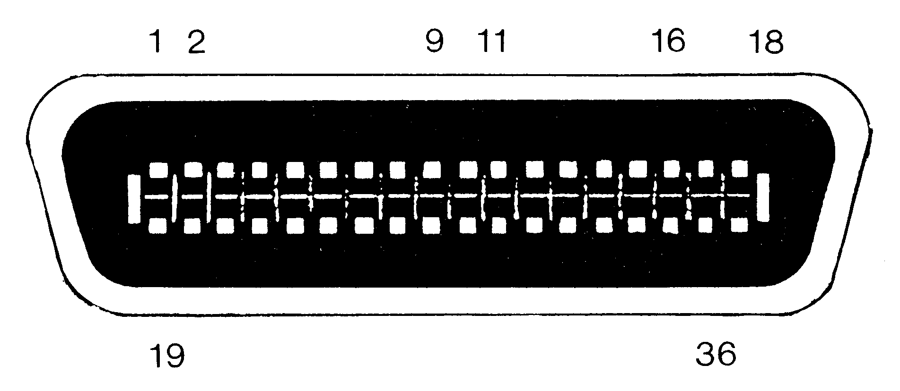
Achten Sie bei der Herstellung der Platine unbedingt darauf, daß sie richtig herum geätzt wird, denn das abgedruckte Layout ist spiegelverkehrt. Spiegelverkehrt deshalb, weil bei der von Ihnen erstellten Folie die Farbschicht der Leiterbahnen auf der Unterseite liegen müssen, um Unterlichtungen beim Belichten der Platine zu vermeiden.
Was leistet das Interface?
Doch nun zum eigentlich interessanten Thema, zu dem, was das Interface leistet. Es soll an dieser Stelle noch angemerkt sein, daß mit dem Interface keine reversen Zeichen ausgegeben werden können (zum Beispiel die Kopfzeile beim Drucken des Directory).
Die vom Computer gesendeten Sekundäradressen dienen dazu, unterschiedliche Interface-Funktionen beziehungsweise Betriebsarten zu selektieren:
Sekundäradresse = 0: Wird mit dem Befehl OPEN 4,4,0 oder OPEN 4,4 ein Druckerkanal geöffnet, werden alle Daten im Groß-/Grafikmodus gedruckt. Dabei werden alle C 64-Sonderzeichen berücksichtigt (Listing 2 und Ausdruck 1).
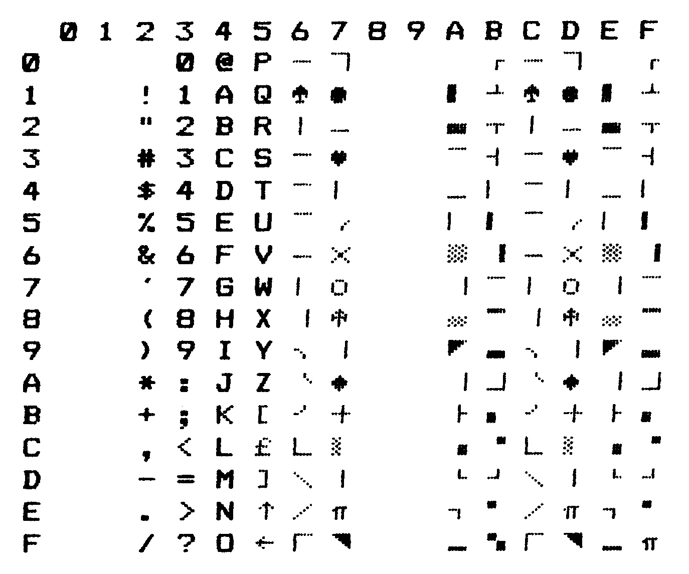
Sekundäradresse = 1, 5 oder 6: In diesem Modus schaltet das Interface auf »Durchgang«, das heißt alle vom Computer gesendeten Daten werden direkt zum Drucker weitergeleitet. Somit lassen sich alle druckerspezifischen Befehle wie Fettschrift ein/aus, Unterstreichen ein/aus oder auch die unterschiedlichen Bit-Image-Modi der verschiedenen Druckertypen ansprechen. Dieser Modus wird auch als Linearkanal oder Direktmodus bezeichnet (Listing 3 und Ausdruck 2).
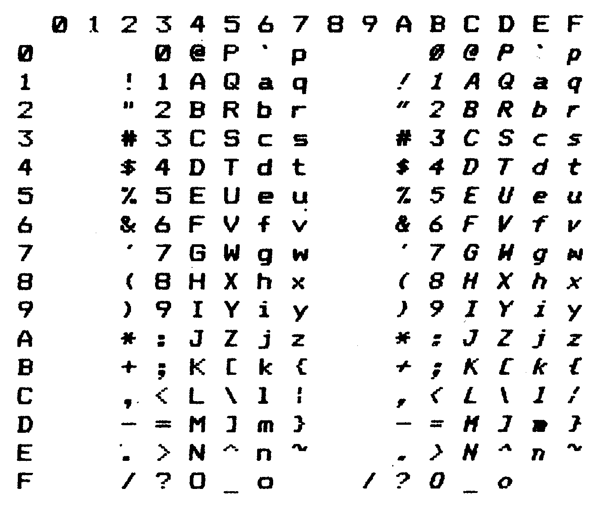
Sekundäradresse = 2: Die Sekundäradresse 2 ermöglicht den Anschluß eines Typenraddruckers mit Centronics-Schnittstelle. Dabei gilt der Standard-ASCII-Zeichensatz, der auch bei allen Matrixdruckern Gültigkeit hat. Jedoch wird das höchstwertige Bit (Bit 8) abgeschnitten, so daß maximal 128 unterschiedliche Zeichen ausgegeben werden können. Wird vom Computer ein Zeichen gesendet, das größer ist als 128, zum Beispiel 193, so gibt der Typenraddrucker den Buchstaben »A« aus, denn 193 - 128 = 65. Und die Zahl 65 entspricht im normalen 8-Bit-ASCII-Zeichensatz einem »A« (Listing 4 und Ausdruck 3).
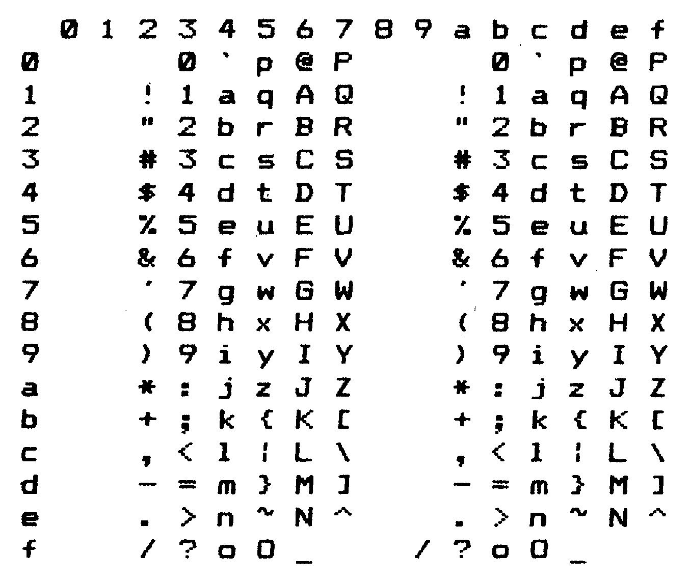
Sekundäradresse = 3: Wird ein Kanal mit der Sekundäradresse 3 geöffnet, wird die zuletzt angewählte Betriebsart fixiert. Beispiel: OPEN 4,4,7:OPEN 5,4,3:PRINT #4:PRINT #5:CLOSE4:CLOSE5
Mit dem ersten OPEN-Befehl wird der Kanal für den Groß/ Kleinschriftmodus geöffnet, um zum Beispiel einen Text mit einem Textverarbeitungsprogramm auszugeben. Der zweite OPEN-Befehl fixiert diesen Modus für alle Sekundäradressen. Das heißt unabhängig davon, welche Sekundäradresse von dem Textverarbeitungsprogramm gesendet wird, der zuvor im OPEN-Befehl festgelegte Modus bleibt so lange aktiv, bis der Drucker ausgeschaltet beziehungsweise das Interface zurückgesetzt wird. Bis auf den Linearkanal lassen sich alle Betriebsarten genauso fixieren. Wird ein Kanal mit der Sekundäradresse 1 geöffnet, fixiert das Interface den Linearkanal. Dieser bleibt wieder so lange aktiv, bis der Drucker ausgeschaltet oder das Interface zurückgesetzt wird.
Sekundäradresse = 7: Diese Betriebsart selektiert den Groß-/Kleinschriftmodus. Alle Zeichen werden so ausgegeben, wie sie im entsprechenden C 64-Zeichensatz auf dem Bildschirm erscheinen (Listing 5 Ausdruck 4).
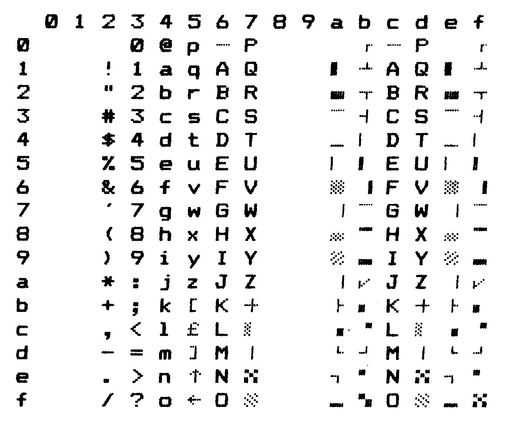
Sekundäradresse = 14: Ist der DIP-Schalter für Auto-Linefeed im Drucker ausgeschaltet, läßt er sich softwaremäßig mit Hilfe der Sekundäradresse 14 im OPEN-Befehl einschalten.
Sekundäradresse = 15: Wurde mit der Sekundäradresse 14 Auto-Linefeed eingeschaltet, so läßt er sich mit Hilfe der Sekundäradresse 15 wieder ausschalten.
Wird ein Druckerkanal mit einer hier nicht aufgeführten Sekundäradresse geöffnet, schaltet das Interface in die Betriebsart für Groß-/Grafikzeichen (entspricht Sekundäradresse 0).
Neben dieser softwaremäßigen Selektion der Betriebsarten über Sekundäradressen lassen sich bestimmte Modi auch hardwaremäßig mit Hilfe von vier DIP-Schaltern einstellen.
DIP-Schalter 1: Auto-Linefeed ein/aus
on = Auto-Linefeed ein
off = Auto-Linefeed aus
DIP-Schalter 2 und 3: Einstellen der Geräteadresse, unter der sich der Drucker ansprechen läßt
| 2 | 3 | |||
|---|---|---|---|---|
| off | off | = | Geräteadresse | 4 |
| off | on | = | ″ | 5 |
| on | off | = | ″ | 6 |
| on | on | = | ″ | 7 |
DIP-Schalter 4: Da das Interface von der Ansteuerung her teilweise den Commodore-Drucker MPS 801/803 simulieren kann, läßt sich mit diesem DIP-Schalter die ESC-Sequenz vorgeben, die das Interface an den Drucker schickt, wenn eine Grafik im Commodore-Modus ausgegeben werden soll. Wie der Schalter einzustellen ist, hängt vom angeschlossenen Drucker ab. Verlangt der Drucker vor der Grafikausgabe die Sequenz »ESC "K" ...«, muß DIP-Schalter 4 auf »off« stehen. Verlangt der Drucker die Sequenz »ESC "*" ..«, muß DIP-Schalter 4 auf »on« stehen.
Der eben angesprochene Commodore-Modus ist automatisch eingeschaltet, wenn ein Druckerkanal mit der Sekundäradresse »0« oder »7« geöffnet wurde. In diesen Modi stehen folgende Steuercodes zur Verfügung.
MPS 801-kompatible Steuercodes
CHR$(8);CHR$(26);CHR$(n);CHR$(xxx): Diese Sequenz wiederholt ein Grafik-Byte. Dabei gibt »xxx« den Inhalt des Grafik-Bytes und »n« die zu wiederholende Anzahl an (Listing 6 und Ausdruck 5).
CHR$(14): Schaltet doppelte Zeichenbreite ein (Listing 7 und Ausdruck 6)
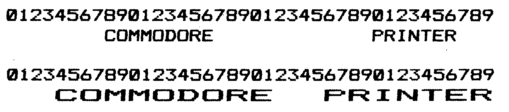
CHR$(15): Schaltet doppelte Zeichenbreite aus
CHR$(16);"AB";"string": Definiert Druckposition. Dabei gibt »A« die Zehnerstelle und »B« die Einerstelle an, ab der »string« ausgegeben wird (Listing 7 und Ausdruck 6).
CHR$(17): Schaltet innerhalb einer Zeile den Zeichensatz in den Cursor-Down-Modus (entspricht der Betriebsart, die mit Sekundäradresse 7 angewählt wird). Haben Sie einen Druckerkanal mit der Sekundäradresse »0« geöffnet (Groß-/ Grafikzeichen), lassen sich nach dem Befehl »CHR$(17)« innerhalb einer Zeile auch Kleinbuchstaben ausgeben (Listing 8 und Ausdruck 7).
CHR$(145): Schaltet innerhalb einer Zeile den Zeichensatz in den Cursor-Up-Modus (entspricht der Betriebsart, die mit Sekundäradresse 7 angewählt wird). Dieser Befehl ist das Gegenstück zu »CHR$(17)«
Damit sind alle Funktionen, Befehle und Steuersequenzen erklärt.
Eine Anmerkung noch zu den Layouts: Wenn Sie die Platinen herstellen, ist zu beachten, daß alle Layouts spiegelverkehrt veröffentlicht sind.
(A.Bos / ah)Den programmierten Ein-Chip-Computer MC68705 können Sie bei folgender Adresse bestellen: A.Bos, Nijlanderhemstraat 21, 8608 BH SNEEK, Holland